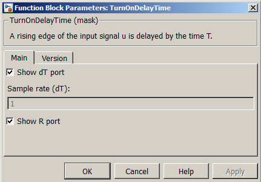

| MBDS Environment |
|
TurnOnDelayTime |
MATLAB Helpdesk |
General
Rising edge delay.
Library
DescriptionMBDS Blockset
A rising edge of the input signal u is delayed by the time T.
Using the parameter mask the block can be configured according to the users needs. Via register card Main the block input and output ports can be shown or hidden (see Figure 1).
- Show dT port. If checked, the block provides an input port for the block sample rate. When unchecked, the block sample rate can be configured via a mask parameter.
- Sample rate (dT). Here the block sample rate can be specified if the dT port is hidden.
- Show R port. If checked, the block provides a reset input port. If unchecked, the block cannot be reset

Figure 1: Parameter Mask Dialog - Register card MainThe register card Version displays the block version information.
Inputs and Outputs
Example*) Except enumeration data types.
Port I/O Data Type Description T
In
Any* Time to delay rising edges of u dT In Any* Block sample time u
In boolean Input signal R In boolean Resets the block state to its initial values while true y Out boolean Delayed rising edge of the input signal
Refer to the example.